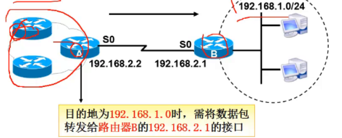
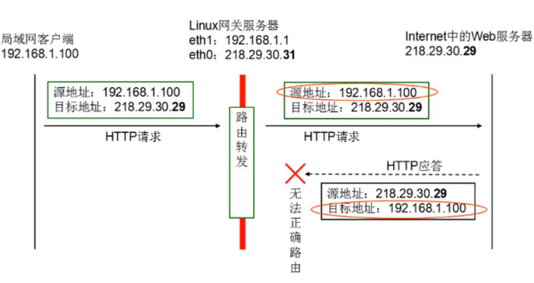

网络层协议
- IP
- ARP/RARP
- ICMP/IGMP
IP数据包

- 字段
- 版本（4） ：IPV4
- IPV4 —->32位
- IPV6 —->128位
- 首部长度（4）
- IP包头部长度，因为长度可变，因此需要定义
- 优先级与服务类型（8）
- 优先级与服务类型，提供3层的QoS
- 总长度（16）
- IP数据的总长度
- 标识符（16）、标志（3）、段偏移量（13）
- 上层来的数据到IP层会被分片，这几个字段用来对数据包进行标识，是数据到达目的端重组的时候不会乱序
- TTL（8）—time to live
- 生命周期字段，经过一个路由器值减1，为0时数据包被丢弃。为了防止一个数据包在网络中无限的循环下去
- 协议号(8)
- 协议字段，是用来标识封装的上层数据是UDP还是TCP，UDP是17，TCP是6
- 首部校验和（16）
- 源ip地址（32）
- 目标ip地址（32）
- 版本（4） ：IPV4
- IP数据包头的大小只占20个字节，MTU：1500
广播和广播域概述
广播和广播域
- 广播：将广播地址作为目的地址的数据帧
- 广播域：网络中能接收到同一个广播所有节点的集合
MAC地址广播（2层广播地址）—》帧
- 广播地址为FF-FF-FF-FF-FF-FF —》帧
IP地址广播（3层广播地址）—》包
- 广播IP地址为IP地址网段的广播地址
- 主机部分全为1的地址 —->包
- 如， 192.168.0.0/24 —>广播地址为192.168.0.255/24
注意
- 不管是2层还是3层广播地址都是在目的地址里出现
- 广播包不能扩散出路由器，但是交换机收到广播包会扩散到所有的接口，如果这些接口是同一个VLAN
路由概述
路由含义
跨越从源主机到目的主机的一个互联网络来转发数据包的过程

路由器（router）：
- 实现跨网段通信的设备
- 能够将数据包转发到正确的目的地，并在转发过程中选择最佳路径的设备－路由器
路由的类型
- 直连路由：直接连接到路由器上的接口的
- 只要配上ip地址，激活(up),就会自动生成
- 静态路由：人去配置到路由器里的，不会自动产生
- 不直接连接的网络
- 由管理员手工配置 的，是单向的，缺乏灵活性
- 
- 默认路由：默认路由是特殊的静态路由
- 当路由器在路由表中找不到目标网络的路由条目时候，路由器会把请求转发到默认路由接口
- 如何添加默认路由？
- 添加网关地址就是配置默认路由
- 也是需要人去指定的
- 动态路由：路由器之间会自动学习，互相告诉，不需要人去配置
- 直连路由：直接连接到路由器上的接口的
路由器的工作原理
- 步骤
- 主机192.168.1.1要发送数据给192.168.4.1
- 路由器A收到数据，查看数据包中的目标地址为192.168.4.1，查看路由表
- 路由器A根据路由表转发数据到S0口
- 路由器B接收到数据包，查看数据包的目标地址，并查看路由表

- 路由表
- 字段
- 目标网段
- 路由器的接口
- 字段
- 网络适配器：网卡
- WAN口：连接外网
- LAN口：连接内网
- 网关地址：其实就是路由器的LAN口地址，网络的关卡
- 网关地址，其实就是一个有效IP地址，配置多少其他电脑配置网关的时候就填多少。
- 默认选两头1，或254
- 路由器收数据后的工作步骤
- 把数据包打开，查看目的ip是去哪
- 查看路由器，是否有道目的ip的路由，如果有就转发数据，没有就丢弃数据
- 注：
- 路由器其实就是一台电脑，专业用来转发数据而已—-》微型的电脑
- 也有内存、cpu、硬盘（存储卡128G）、网卡等
- 路由器的路由表是存放在内存当中的，关机的时候会保存到存储卡里
- 路由器里一个接口就是一个网段。
- 路由器的接口是可以配置ip地址的,和电脑的网卡一样
- 交换机（2层）的接口不能配置ip地址
- 数据在传输的过程中，mac地址是不停变化的，ip地址可以不变，但是如果是经过NAT转换，ip包的源ip和目的ip都可以变
- 路由器其实就是一台电脑，专业用来转发数据而已—-》微型的电脑
路由表的形成
路由表
- 路由器中维护的路由条目的集合
- 路由器根据路由表做路径选择
- 路由表里没有匹配的网段的时候，路由器会丢弃数据包
- 路由表里的路由是有优先级的，优先级高的优先匹配
- 直连路由 —》静态路由—》动态路由—-》默认路由
- 路由表里匹配了第一条就不会匹配其他的了
路由表的形成
直连网段
- 配置IP地址，端口UP状态（激活），形成直连路由
非直连网段
- 对于非直连的网段，需要静态路由或动态路由，将网段手工添加到路由表中
网络通信过程中，拿对方的ip和自己的子网掩码进行与运算得到网段号，然后拿自己的ip和子网掩码进行与运算得到网段号，然后比较2个网段号是否一样，如果一样就断定在相同的网段，查路由表走直连路由，如果不是相同网段走默认路由
路由器转发数据包的封装过程
NAT技术简介
含义：网络地址转换
- 将ip包里的地址进行修改，将内网的ip地址，修改为路由的外网卡的ip地址出去
Linux下的NAT技术
SNAT：修改源地址
应用环境
- 局域网主机共享单个公网ip地址接入internet
原理
- 源地址转换 ，source network address translation
- 修改数据包的源IP地址

未使用SNAT策略时候的情况
- 
在网关中使用SNAT策略后
实现SNAT功能
前提条件
- 局域网各主机正确配置ip地址/子网掩码
- 局域网各主机正确设置默认网关地址
推荐实现步骤
- 开启网关主机的路由转发功能
- 添加使用SNAT策略的防火墙规则
规则示例：
1
2
3
4
5
6
7
8
9iptables -t nat -A POSTROUTING -s 192.168.1.0/24 -o eth0 -j SNAT --to-source 218.29.30.31
#iptables 是防火墙工具
-t nat -A POSTROUTING 在nat 表的POSTROUTING 链上做操作
-s 指定源ip地址是哪个网段的
-o 指定数据从哪个网卡接口转发出去，一般都是外网口 out
-j SNAT 告诉iptables防火墙进行SNAT操作，其实就是修改数据包的源ip地址
--to-source 告诉iptables 防火墙修改源ip地址为这个指定的ip
DNAT：修改目的地址
DNAT策略的典型应用环境
- 在internet中发布位于企业局域网内的服务器
DNAT策略的原理
- 目标地址转换：Destination Network Address Translation
- 修改数据包的目的IP地址

映射：map
- 访问一个A，转到D去
- A—->D
- B—–>C
- E——>F
- 有一个一一对应的关系，有两边的阵容，访问一边的A，会给你转到另一边的D—》映射
- 访问一个A，转到D去
如何让外网的机器能访问到内网不同的服务器
- 访问WAN口的80端口—-》映射到web server
- 访问WAN口的22端口—》映射到ssh server
DNAT的原理
- 在网关中使用DNAT策略发布内网服务器
DNAT策略的应用
前提条件
- 局域网的web服务器正确设置了ip地址/子网掩码
- 局域网的web服务器正确设置了默认网关地址
推荐实现步骤
推荐已开启网关的路由转发功能
临时开启路由功能
echo 1 >/proc/sys/net/ipv4/ip_forward
永久开启路由功能
- 修改文件
vim /etc/sysctl.conf
net.ipv4.ip_forward=1
让内核重新读取文件，配置开启路由功能
sysctl -p
添加使用DNAT策略的防火墙规则
在使用之前先清空iptables
iptables -t nat -F —->清除nat表里的规则
iptables -F 清除filter表里的规则
iptables -t nat -L 查看nat表里的规则
规则示范：
iptables -t nat -A PREROUTING -i eth0 -d 218.29.30.31 -p tcp
–dport 80 -j DNAT –to-destination 192.168.1.6
-i eth0 :指定数据进来的接口
-d 218.29.30.31 访问网关的目的地址是外网IP
–to-destination 192.168.1.6：80 ：内网中web服务器的目的IP地址，并且端口号是80
转发后的端口号是可以修改的，并不一定要是80，可以是其他的
添加SNAT策略
- iptables -t nat -A POSTROUTING -s 192.168.1.0/24 -o eth0 -j SNAT –to-source 218.29.30.31
ARP协议
局域网中主机的通信
- ip地址（ip地址在整个互联网里使用）和mac地址（mac地址只在局域网中使用）
什么是ARP协议
- Address Resolution Protocol ,地址解析协议
- 将一个已知的IP地址解析成mac地址
- 为了解决网络中我们先知道ip地址，不知道mac地址，弄出了一个ARP协议，解决封装过程中需要使用mac地址的问题
Linux里使用arp
1
2
3
4
5
6#安装arp
[root@localhost ~]# which arp
/usr/sbin/arp
[root@localhost ~]# rpm -qf /usr/sbin/arp
net-tools-2.0-0.25.20131004git.el7.x86_64
[root@localhost ~]# yum install net-tools 安装网络相关的工具包1
2
3
4#HW--hardway 硬件地址---》mac地址
[root@localhost ~]# arp
Address HWtype HWaddress Flags Mask Iface
gateway ether 00:0c:29:68:2c:60 C ens33Linux系统中使用ARP命令
- arp -a :查看arp缓存表
- arp -n :查看arp缓存表
- arp d:清除arp缓存
- arp -s :绑定ip地址和mac地址 —》arp绑定可以防止中arp病毒的方式之一
ARP表里的数据，是在内存当中的，是可以动态学习的，是不停更新的
wins系统里的arp命令
arp -a :查看arp缓存表
arp -d:清除arp缓存
APR绑定
1
$ arp -s ip-address mac-address
静态绑定的好处，不容易被别人欺骗
APR广播包里的内容
- 数据链路层：目的mac是ffffffffffff
- 网络层：
- arp头部信息：源ip和目的ip
- 源mac和目的mac(000000000000)
- arp头部信息：源ip和目的ip
ARP协议的工作原理
- PC1发送数据给PC2,查看缓存（ARP表）没有PC2的MAC地址
- PC1发送ARP请求信息（广播）
- 所有主机收到ARP请求消息
- PC2恢复ARP应答（单播）
- 其他主机丢弃
- PC1将PC2的Mac地址保存到缓存中，发送数据
- PC1发送数据给PC2,查看缓存（ARP表）没有PC2的MAC地址
ARP病毒
- 解决问题
- 拔网线
- 使用抓包工具：科来
- 静态绑定 ip地址和mac地址
- arp -s ip mac
- 找到后，进行杀毒 ，或者重装系统
- 解决问题
ICMP协议
ICMP是一个“错误侦测与回馈机制”，是通过ip数据包封装的，用来发送错误和控制信息
含义
ICMP数据的封装过程
- ICMP协议封装好数据之后，再次使用ip协议再次封装，主要加上源ip和目的ip。因为ICMP封装的数据里没有写明从哪里来到哪里去，只有测试的数据和任务。
ICMP协议有两种类型的包：
- 1.请求包：icmp echo request
- ping 命令发出的是请求包
- 2.响应包 icmp echo reply
- 返回的信息的是响应包
- ICMP协议的类型
- 0 响应包
- 8 请求包
- 3 目的主机不可达
- ping 命令有两种类型的icmp包
- 请求包
- 响应包
- 1.请求包：icmp echo request
Ping命令
ping 命令的底层技术就是使用icmp协议封装数据，用来测试网络是否通
- 能ping通说明某个电脑或是路由器在使用这个ip地址
- 如果ping不通说明这个ip地址没有人用或是对方的服务器开启防火墙挡住了你发的ping命令的请求包
1
2
3
4
5
6
7
8
9
10
11
12
13
14
15
16
17
18
19[root@localhost ~]# iptables -A INPUT -p icmp --icmp-type 8 -j DROP
[root@localhost ~]#
-A INPUT 在INPUT链 进入Linux内部的位置
-p icmp 指定协议为icmp
--icmp-type 8 指定icmp协议的类型为8
-j DROP 采取的动作是丢弃
[root@localhost ~]# iptables -L 查看防火墙规则
Chain INPUT (policy ACCEPT)
target prot opt source destination
DROP icmp -- anywhere anywhere icmp echo-request
Chain FORWARD (policy ACCEPT)
target prot opt source destination
Chain OUTPUT (policy ACCEPT)
target prot opt source destination
[root@localhost ~]#ping命令在wins里默认就发4个包
ping命令在Linux里
- ping -c 发包的数量
- ping -i 指定包和包之间间隔时间
- ping -W:指定超时时间
路由追踪命令
显示你的电脑到百度的服务器中间会经过多少个服务器，他们的 ip地址是多少
- centos6
- traceroute www.baidu.com
- centos7
- tracepath www.baidu.com
- win
- tarcert www.baidu.com
Linux里查看网卡带宽和流量的命令
ifconfig
1
2
3
4
5
6
7
8
9
10
11
12
13
14
15
16
17
18[root@localhost ~]# ifconfig
ens33: flags=4163<UP,BROADCAST,RUNNING,MULTICAST> mtu 1500
inet 192.168.100.2 netmask 255.255.255.0 broadcast 192.168.100.255
inet6 fe80::20c:29ff:fe4e:6ff3 prefixlen 64 scopeid 0x20<link>
ether 00:0c:29:4e:6f:f3 txqueuelen 1000 (Ethernet)
RX packets 73165 bytes 45384637 (43.2 MiB)
RX errors 0 dropped 0 overruns 0 frame 0
TX packets 2816 bytes 293012 (286.1 KiB)
TX errors 0 dropped 0 overruns 0 carrier 0 collisions 0
lo: flags=73<UP,LOOPBACK,RUNNING> mtu 65536
inet 127.0.0.1 netmask 255.0.0.0
inet6 ::1 prefixlen 128 scopeid 0x10<host>
loop txqueuelen 1000 (Local Loopback)
RX packets 107 bytes 9794 (9.5 KiB)
RX errors 0 dropped 0 overruns 0 frame 0
TX packets 107 bytes 9794 (9.5 KiB)
TX errors 0 dropped 0 overruns 0 carrier 0 collisions 0- TX 发送出去的数据包 translate
- RX 接受到的数据包 receive
dstat
- 可以查看网卡的流量
ethtools
- 查看带宽
firewalld
- centos7里的默认防火墙软件，但有时会导致iptables规则失效或者出现异常，建议关闭
- 以前centos6里的默认防火墙软件是iptables
- service firewalld stop —->关闭防火墙
故障排除
1.分段排除
一路ping过去
2.先硬件后软件
先看硬件是否有问题（网线接了没有），然后再去看ip地址的配置和路由的配置
3.替换法
电脑、网线、交换机、路由器
问题
Q1:两台直连主机的IP地址分别配置172.16.10.5/16,172.16.1.6/16,他们可以通信吗？
- 拿ip地址和子网掩码进行与运算，得出网段号。
- 拿着别人的ip和自己的子网掩码进行与运算
- 如果得出的网段号和自己的网段号一样，就认为两台电脑在同一个网段，如果连接到同一个交换机而且在同一个VLAN,是可以通信的
- 如果是同一个网段的，就把数据发给交换机。如果不是一个网段的，就把数据发给路由器
Q2:哪些设备里有路由表？
- 1.电脑里有：win和Linux、Mac、Unix都有路由表
- 2.路由器
- 3.防火墙
- 4.三层交换机
Q3：Linux怎么查路由表？
- ip route
Q4:刷新网络服务，会导致路由表重新生成，以前的内容都会丢失。
- 只会有直连路由。自己配置的静态路由会丢失
- 还会导致手工开启的路由功能也会自动关闭
Q5：数据在封装的时候，是先封装ip地址还是mac地址？
- 先使用ip地址，因为ip地址在网络层，mac地址在数据链路层。数据封装是从应用层到物理层
Q6：哪些设备有arp表？
- 交换机、路由器、电脑、手机
Q7：哪些设备有mac地址表？
- 交换机
Q8：编写一个shell脚本检测192.168.0.0/24这个子网里，哪些ip地址在使用，哪些没有在使用？
- 分析：
- for循环
- ping 1-254
- 将使用的ip地址存放到一个文件夹里，不使用的文件夹放到另一个文件夹里
- ping命令执行的返回值 0为通 ，非0为不通
- 分析：
Q9：为什么ping之前需要用到arp广播？
- 在以太网环境中数据的传输所依懒的是MAC地址而非IP地址，而将已知IP地址转换为MAC地址的工作是由ARP协议来完成的。
Q10:ARP协议和ICMP协议
- 电脑和路由器都支持的协议
- 默认情况下，电脑和路由器收到arp广播包和ICMP协议的ping包，都会回复
Q11:mac地址表示可以学习的，路由表是怎么样来的？